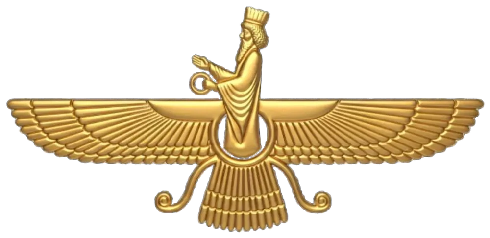

What is a Navjote?
Navjote means "new initiation". It is the ceremony in which a Zoroastrian child formally accepts the Good Religion of Prophet Zarathustra and takes on the responsibility of living by it.
The Sudreh

The word Sudreh means good path and reminds us not to abandon the good path of life. It is made of white muslin cloth. White stands for purity of mind. The front and the back of the Sudreh remind you of the past and the present and the material world and the spiritual world. A small pocket at the neck, the Girehban, reminds the wearer to fill it each day with good thoughts, words and deeds.
The Kusti
The Kusti, or the pathfinder, leads us in the direction of light and truth. A sacred cord woven from 72 threads of sheep's wool, tied around the waist over the Sudreh. The 72 threads recall the 72 chapters of the Yasna, and the Kusti is a daily reminder of one's commitment to the faith.
The ceremony
The word Navjote is derived from two words: ‘Nao’, meaning new, and ‘Zot’, meaning worshipper. The Navjote ceremony marks a child’s formal initiation into the Zoroastrian faith. The ritual typically includes a ceremonial bath (Nahan, also known as Snehan in Sanskrit), the recitation of prayers, and guidance from the priest (Mobed), who leads the child through the prayers, helps them wear the Sudreh and Kusti, and offers blessings. Family and friends then shower the child with rice and flower petals as symbols of joy and good fortune, while extending their blessings and best wishes for the future.
The three guiding principles
Good thoughtsHukhta
Good wordsHvarshta
Good deeds
From this day the child is a full member of the community, ready to walk the path of Asha (truth and righteousness). A celebratory feast follows with family and friends.